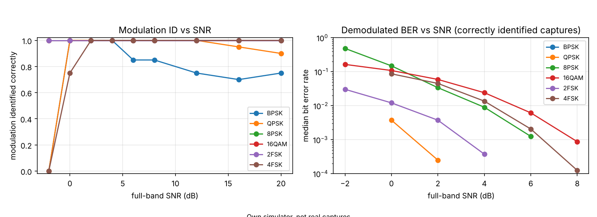
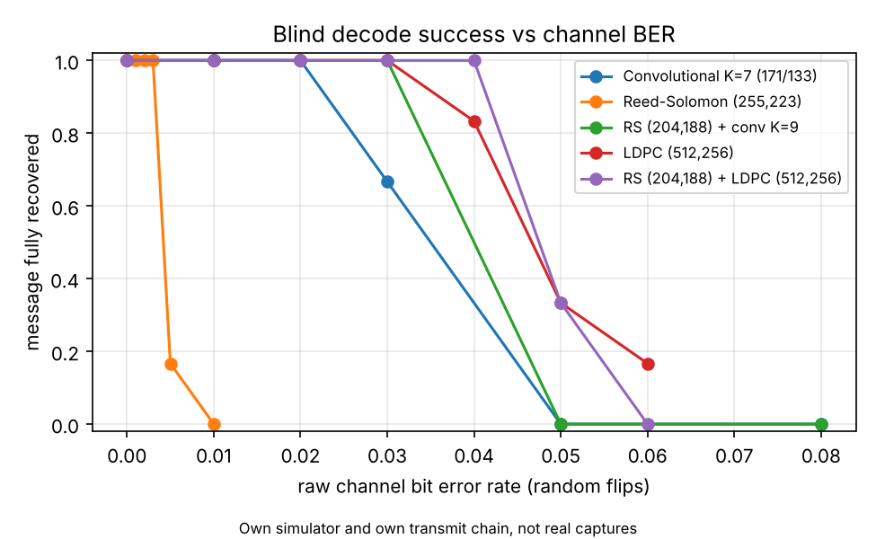

| Problem Statement ID | [fill in] |
| Problem Statement Title | [fill in from the SIH portal] |
| Theme / Category | [fill in] |
| Team ID and Team Name | [fill in] |


All accuracy figures: this project's own simulator. Dataset: RadioML 2018.01A (simulated).